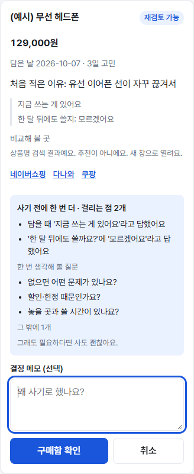
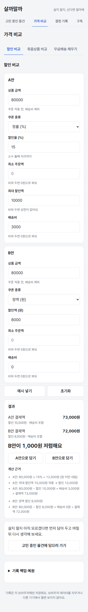
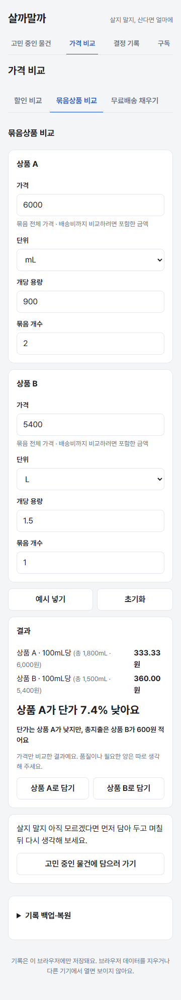
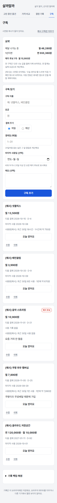

바이브 코딩 과제 · 2026-10-17
살지 말지 한 번 더 생각하고, 산다면 더 싸게 사도록 돕는 웹사이트
강승준 · lumos0107.github.io/BuyorNot
왜 만들었나
세일 문구에 담았다가 안 쓰는 물건이 쌓인다
15% 할인과 1만 원 할인, 최대 할인액·배송비까지 따지면 뭐가 싼지 헷갈린다
900mL 2개와 1.5L 1개, 대용량을 샀다가 남긴다
대상: 20~30대 자취생 · 모바일 우선 · 회원가입 없음 · 입력한 값만으로 계산
무엇을 만들었나
| 화면 | 하는 일 |
|---|---|
| 고민 중인 물건 | 이유·고민 기간·질문을 담아 두고, 사려고 할 때 "사기 전에 한 번 더"로 걸리는 점을 보여준 뒤 구매·포기를 기록(되돌리기 가능) |
| 가격 비교 | 할인 비교 · 묶음상품 비교(단가·총지출 한 문장) · 무료배송 채우기, 결과를 고민 목록에 바로 담기 |
| 결정 기록 | 필터, 구매 포기 금액과 시급 환산, 구매 7일 뒤 "잘 샀나요?", 다시 고민하기 |
| 구독 | 다음 결제일 D-n, 월·연 합계, 해지 후보, 사용량으로 본 한 번에 드는 돈("오늘 썼어요"로 직접 기록) |
| 백업·복원 | 서버 없이 기록을 파일로 옮기고 보관 |
시연 1 · 고민 목록
시연: "예시 물건 넣기" → '게이밍 키보드' 입력 → 헤드폰 구매함(걸리는 점 2개) → 구매 포기 → 되돌리기

시연 2 · 할인 비교
| 조건 | A안 | B안 |
|---|---|---|
| 상품 금액 | 80,000원 | 80,000원 |
| 쿠폰 | 15% (최대 10,000원) | 정액 8,000원 |
| 배송비 | 3,000원 | 0원 |
| 결제액 | 73,000원 | 72,000원 |
B안이 1,000원 저렴해요 — 80,000 × 15% = 12,000 → 최대 할인 10,000 → 80,000 − 10,000 + 3,000
최소 주문액 미달이면 "적용 불가 · 1,000원 부족"처럼 이유를 함께 보여준다

시연 3 · 묶음상품 비교
| 상품 A | 상품 B | |
|---|---|---|
| 가격 | 6,000원 | 5,400원 |
| 총량 | 1,800mL | 1,500mL |
| 100mL당 | 333.33원 | 360.00원 |
상품 A가 단가 7.4% 낮아요. 총지출은 A가 600원 더 커요 — 가격만 비교한 결과예요
무게와 부피처럼 종류가 다르면 비교하지 않고, 화면 단가가 같지만 실제로 다르면 "아주 작은 차이"로 안내

시연 4 · 결정 뒤에 돌아보기
시연: 결정 기록에서 시급 입력·회고 → 구독 "예시 구독 넣기" → 음악 스트리밍 "오늘 썼어요"

PRD와 Todo
개발 방식
359
자동 테스트(1차 115). 계산·시각 규칙은 순수 함수, 화면은 사용자 조작 기준. 화면은 실제 Chrome 캡처로 확인
10회
GPT 검토(1차 5·2차 3·3차 2)와 후속 확인 3회. 지적 109건 중 102건 반영, 나머지는 근거를 들어 미반영·보류·제작자 결정
16
코드 커밋(1차 5·2차 6·3차 5), 문서 커밋은 따로. 단계마다 commit, 개발 기록(DEVLOG)에 요청·결과·오류·수정 이유
GitHub 이력
| 429ca36 | 뼈대·배포 |
| fdef9bc | 묶음 비교 |
| 9c6f6e4 | 할인 비교 |
| 437e534 | 고민 목록·기록 |
| 3855fdd | 검토 반영 |
| 50da3de | 연장·메모·필터 |
| 0270b46 | 무료배송 |
| 67d5cb2 | 질문·알림·링크 |
| 283b395 | 요약·회고 |
| f9eee6b | 구독 |
| 7a27176 | 여러 탭 보호 |
| d2c7fcb | 용어 '고민' |
| 1d81e20 | 사기 전 점검 |
| bcea9e3 | 되돌리기·사용 기록 |
| 62486a6 | 백업·비교 담기 |
| 0cb2257 | 검토 반영 |
문서 커밋(PRD·README·발표 자료)은 따로. main에 push하면 GitHub Actions가 테스트 → 빌드 → GitHub Pages 배포.
바이브 코딩에서 겪은 일 1
AI가 쓴 결과 문구가 "총지출이 더 큰 쪽"을 단가 판정에서 유추했다. A 2,000원·B 1,500원인데 "상품 B가 500원 더 커요".
다른 값을 넣은 화면 테스트가 처음 잡았고, AC10 예시 화면에서도 잘못 표시될 오류였다. 예시 테스트는 단가 줄만 확인하고 있었다.
계산 로직에 spendMore(총지출이 큰 쪽)를 따로 두고, 로직 테스트 2건을 먼저 보강해 실패를 확인한 뒤 구현.
교훈: 단가와 총지출은 별개의 사실. 로직이 직접 답하게 하고, 테스트는 예시 값 말고 다른 값도 넣는다.
바이브 코딩에서 겪은 일 2
검증을 통과한 Infinity가 BigInt 변환에서 RangeError. 개수 9,999개·용량 1,000만 상한을 두고 총량을 BigInt로 계산.
0.0004g처럼 아주 작은 용량이 총량 0이 되던 문제도 같은 검토에서 → 소수 셋째 자리까지만 받도록
GPT: Math.round(1.005×100)은 100인데 화면은 "1.01". 바로 믿지 않고 Node로 직접 실행해 확인한 뒤, 화면과 같은 포맷 함수로 판정하도록 수정.
반대로 "색 토큰이 8개"라는 지적은 색상(hue)은 4개라고 근거를 들어 반영하지 않았다.
바이브 코딩에서 겪은 일 3
사례는 "결제일 31일, 오늘 2/28 → 3/31"인데 같은 PRD의 규칙은 "결제일이 오늘이면 D-0". 테스트를 쓰다 충돌을 발견했다.
사례를 "2/28 → 2/28(D-0)"과 "3/1 → 3/31"로 나눠 정정하고 DEVLOG에 기록
"공통 어절이면 비슷함"이면 '무선 마우스'도 '무선 헤드폰'과 비슷해져 사례와 모순. "마지막 어절 일치"로 바꿨고, GPT가 '헤드폰 거치대' 오탐을 짚어 "끝부분 일치"로 다시 고쳤다.
'헤드폰 블랙'처럼 뒤에 붙는 색상·모델은 놓친다 — 알려진 한계로 PRD에 적음
방법론의 장단점
개선이 필요한 점
알림(고민 기간 종료·구독 결제일), 기기 간 자동 동기화(지금은 백업 파일), 구독 사용량 자동 연동(휴대폰 앱 필요, 아이폰은 제약), 가격 수첩·필요한 양 기준 비교
실제 절약이나 충동구매 감소 효과는 사용 기록을 모은 뒤 판단. 스크린리더 실사용 검증은 하지 않음. 비슷한 이름 판정은 뒤에 붙는 색상·모델을 놓침
쿠폰은 안마다 하나, 카드 할인·포인트·복합 쿠폰 없음. 배송비는 사용자가 확인한 값만
구매 포기 금액은 담을 때 적은 가격의 합이라 실제로 아낀 돈과 다를 수 있다고 화면에 함께 적었다. 절약액·저축액이라 부르지 않는다.
결론
고민 목록 · 가격 비교 3가지 · 결정 기록 · 구독 — 자동 테스트 359개와 화면 캡처로 검증 사례 35개를 확인했다. 효과는 사용 기록을 모은 뒤 판단한다
lumos0107.github.io/BuyorNot · github.com/lumos0107/BuyorNot